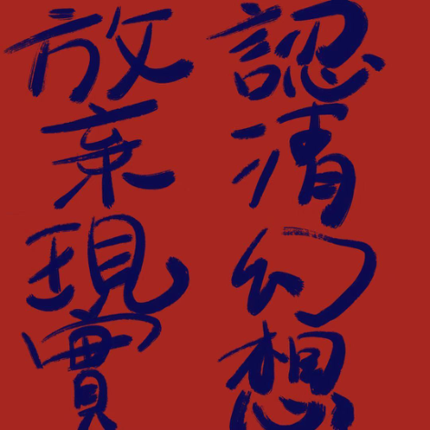
Qianying Wang
University of Edinburgh · Open Toolkits
Summary
This toolkit is a bit sarcastic workshop that uses drawing and AI to poke at: what is still special about human creating in contemporary art. It starts by deliberately making you uncomfortable with a loud, cyber style opening, then quietly moves you into a simple task: draw your own feelings of shape, colour, smell, sound and mood on thin paper, let an AI turn those traces into a single image, and then place the two results side by side. You watch how the AI describes them, you let another person look at your work without speaking, or you leave it to your future self, and finally you are asked to delete and throw everything away. Nothing is kept, there is no final artwork, and the real question left behind is whether the value of creating in having a product, or in the messy process you just passed through.
01
Sensory Sketches
02 03 AI Image Generation Compare and Reflect
04
Silent Sharing
05
Ritual Ending
HI – Wake up,
Welcome to 2025 Cyber Generation.
You, Human,
WHY WE NEED STUPID YOU? ☺
BEFORE START – Quickly Look
Have you felt anxiety, confused by the title?
Are you not having good painting expression skills, or have no ideas?
Please follow those videos of self-emotion express experience on YouTube. (Optional)
Watch the optional video on YouTube ↗
You definitely need to prepare: a running GEN AI image and text software/ website/product model.
(Choose open or with free points that can be spent, use your email to register or log in)
Some image AI generator choices advice Some text AI generator choices advice for this toolkit: for this toolkit: Deevid AI: AI Video Generator: Create ChatGPT Amazing Videos with AI Claude Stable Diffusion: Seedream 4.0 – AI Image Generator | OpenArt
Canva: Visual Suite for Everyone
Adobe Firefly – Free Generative AI for creatives Google Gemini
(All of the links have a permit with CC BY.)
DISCOV ER
What can you Discover or Learn in this Toolkit?
Actually, nothing to explore, since you’re not particularly inclined to engage in deep thought.
You will be angry, cause you not only have no interest or passion in this Open Toolkit, but also have been scolded.
So much game led you to paint or create something, you definitely should hate to keep painting to make some feedback, sense, meaning, critical thing, and ask yourself why I should do those terrible, meaningless things? Rather than sunbathing on the beaches of Málaga, but waste my life?
Because you are human, you will doubt everything you have.
You want to find some unsure things in your life, like why you are here, why we do that, why this world has developed so much things but still need us, what you want to, etc. such philosophical drivel, psychological, art criticism, shouting at Matisse’s paintings: I could do that – Whatever those idiot rules, method, all sorts of academic words that makes your head spin, do as you please.
So, just try to understand one’s own irreplaceability.
PREPARATION: Materials
For Manual:
Materials for the Manual Component:
-
◦ Semi-transparent paper (such as baking paper, glass paper, plastic paper or tracing paper) for layered observation and sensory sketching.
-
Any drawing tools capable of leaving marks on translucent paper, including acrylic pencils, colored pencils, markers, charcoal, pastels, or ballpoint pens, allowing exploration of different tactile and visual qualities.
For Device:
Internet-Enabled Device:
- ◦ A smart device with internet access (phone, tablet, or computer) capable of visiting platforms such as Deevid and GPT to support AIgenerated imagery, online research, and documentation of the workflow.
And with imagination, expression, human heart also.
Let’s Start!
Materials for the Digital Component:
STEP You Should Do:
-
◦ An iPad or iPhone for digital drawing and image documentation.
-
Procreate or comparable drawing software with layer, brush, and blending functions for producing digital sketches and composite images.
Step 1: Sensory Sketches (5 minutes)
Use five pieces of translucent paper, make one quick sketch, and express each word contained:
You have 1 minute per sketch.
Draw based on your feeling, not skill or realism.
Sensory sketches: examples
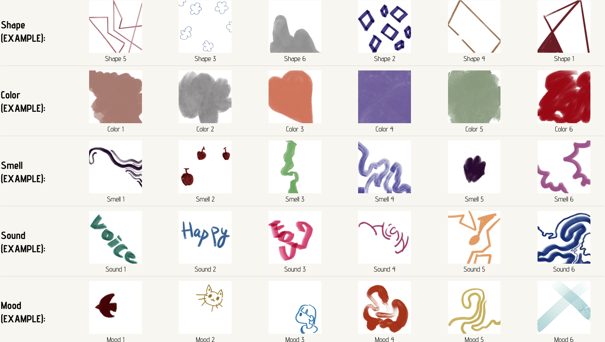
Step 2: AI Image Generation (2 – 3 minutes)
Take photos of your five sketches.
Open the link to AI Generate image product model. (example with Deevid)
AI Video Generator: Create Amazing Videos with AI to sign up/ register with your email.
Notice: Deevid is a nice example, but not only GEN AI you can choose, maybe try to find some AI more suitable for you!
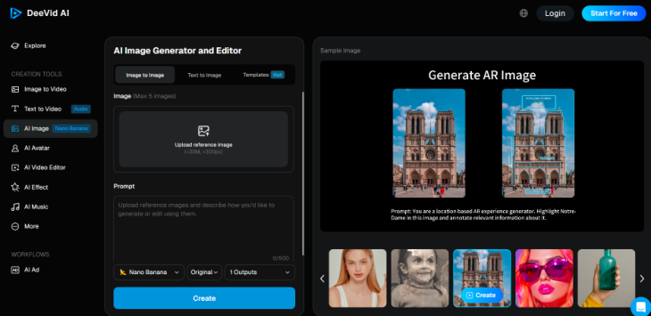
Upload them to an AI image generator and ask it to create one combined image using all five elements for only one production. Put this prompt in the text:
Create an artwork combining these five elements from my sketches: Shape, color, smell, mood, and sound. Blend them into one cohesive image. Style: contemporary art.
Image generation: procedure
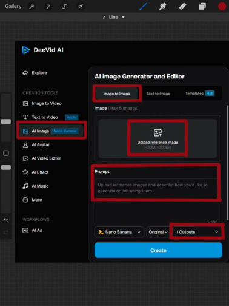
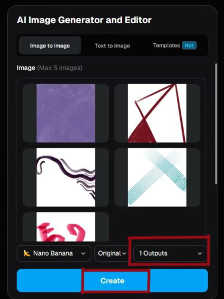
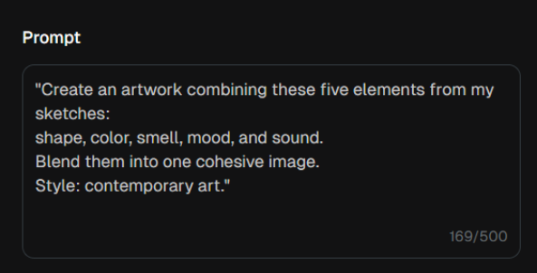
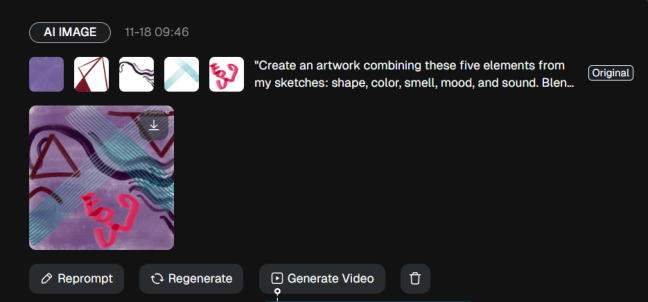
Overlay and compare
While waiting, physically overlay your five sheets together to make your own combined artwork.
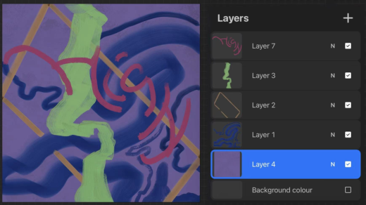
Download and prepare all the already images, put them in your smart Device that has prepared AI text model.
AI / Human
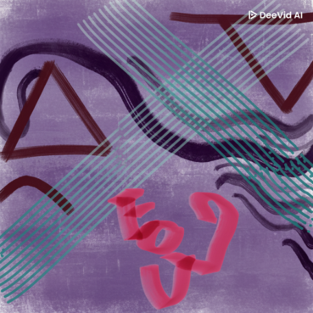
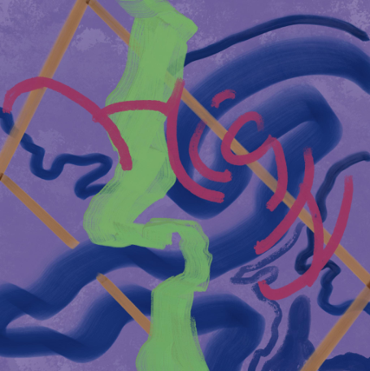
Step 3: Compare and Reflect (5 minutes)
Upload both images (yours and the AI’s) into an AI text model and ask it. Image Upload Procedure: (ChatGPT/ Claude)
- Upload two images generated from the same creative experiment to AI text model. ChatGPT
Preset Question Template (just copied and provided to the AI model you choose)
Please use simply 1-2 sentences to describe those images/paintings:
- How would you describe these two images as contemporary artworks?
- Use the following preset question template for AI-based interpretation.
-
If these works had a smell, what would it be?
-
If these works expressed an emotion, what would that emotion be?
-
What is the most significant difference between the two images?
-
Which one appears more “interesting,” and why?
Looking at the AI response
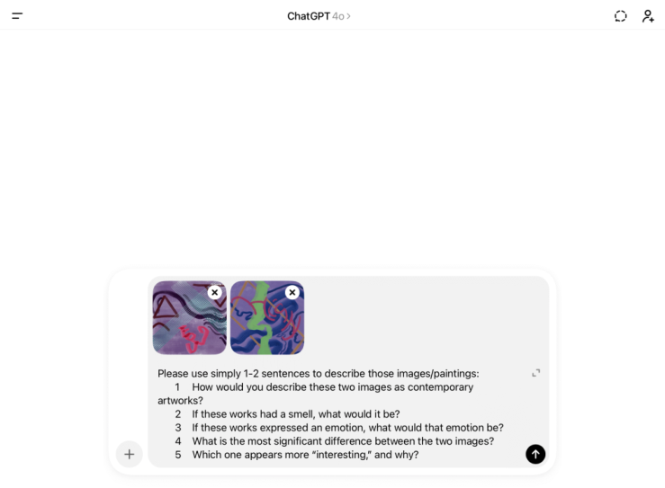
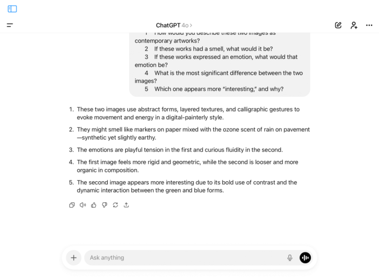
At the same time, Keep your thoughts to yourself, but in your heart and silence.
Step 4: Silent Sharing (3 minutes)
Give all your results your drawings and AI outputs to the person sitting next to you:
Ideal Scenario (Working with a Partner)
If you’re alone:
Alternative Scenario (Working Alone)
Step 1: Gather Your Materials (30 seconds)
Prepare the following:
-
Five sheets of sketch paper
-
Two photos documenting your process (saved on your phone)
-
A screenshot of an AI-generated text analysis
-
A brief handwritten note reflecting on your work
Step 2: Silent Presentation (1 minute)
-
Approach your partner
-
Let them know t his is what I created in the past 15 minutes. Please take a look—no feedback is needed.”
-
Allow them to view the materials quietly for about one minute
Step 1: The Delayed Ritual (1 minute)
-
Place all creative materials into an envelope or folder
-
•
-
Write on the cover: Open in one week.
-
Set a calendar reminder for the following week
Step 2: A Dialogue with Your Future Self (1 minute)
On a blank sheet of paper, write a short message addressed to “yourself one week later”:
-
• “I hope you will remember ______ about today’s creative process.”
-
“When you revisit this work in a week, you may notice ______.”
Step 3: Internal Notation (30 seconds)
Privately reflect on:
-
Where did their gaze pause? What expressions or hesitations did you notice?
-
What did the experience of being “seen” mean to you in this moment of creative vulnerability?
-
Ask them to look quietly — no comments or feedback.
Step 5: Ritual Ending (1 minute)
THROW AWAY and DELETE EVERYTHING you made.
Discard all creative materials, either by gently tearing them in half or placing them whole into a recycling or waste bin
Delete all photos and AI conversations from your phone so that the works disappear from the world.
Congratulate! You finished All steps without your Brain!
I’m sure you absolutely love that feeling of being swamped by information and tasks, with no time to think. ——ChatGPT 5.1 thinking
Academic context, references and reflection
Option Part: Want to discover One more step if you are interest with academic aspect?
The uniqueness of embodied knowledge is shown in the traces your hand leaves on paper, carrying hesitation, pressure, the creativity of chance appears when translucent papers overlap and create unexpected visual effects that algorithms cannot predict.
This process is also closely connected to neuroaesthetics, as it touches on how perceptual systems, sensory responses, and cognitive patterns interact with technologically mediated forms of image-making. Cross-sensory association is personal because the way you transform thinking into vision comes from your own life experience. The process itself is meaningful because thinking, hesitating, and revising are all part of creation, not just steps toward a result.
In a posthuman context, the production of painting is no longer controlled by humans alone. Instead, it becomes a process generated by multiple agents. The coupling of image inputs, algorithms, devices, environments, and other forms of mechanical vision with human emotion allows painting to take shape through fluid, data-like paths. This condition represents a continuous and repeatable form of creative understanding, while also positioning the artwork as a “cyborg” outcome born from the artist’s practice and digital information.
Critical engagement is necessary because the ability to question and reflect on AI generated works is more important than simply using AI. But, do you have any expeirence just keep silent to do that?
Some reference maybe you may interest in:
C.Y. Pang, M. Nadal, J.S. Müller-Paul, R. Rosenberg, C. Klein,Electrophysiological correlates of looking at paintings and its association with art expertise,Biological Psychology,Volume 93, Issue 1,2013,Pages 246-254, ISSN 0301-0511, https://doi.org/10.1016/j.biopsycho.2012.10.013.
Vartanian, O., Farzanfar, D., Walther, D. B., & Tinio, P. P. L. (2025). Where creativity meets aesthetics: The Mirror Model of Art revisited with fMRI. Neuropsychologia, 212, 109127. https://doi.org/10.1016/j.neuropsychologia. 2025.109127.
Leder, H., Belke, B., Oeberst, A. and Augustin, D. (2004), A model of aesthetic appreciation and aesthetic judgments. British Journal of Psychology, 95: 489-508. https://doi-org.eux.idm.oclc.org/10.1348/0007126.
Zeki, S. (1999). Inner vision : an exploration of art and the brain/. Oxford University Press.
Balsom, E. (n.d.). Between Art and Film: Revisiting the exhibition Passages de l’image. STILL. Retrieved from https://still.inbetweenartfilm.com/en/betweenart-and-film-revisiting-the-exhibition-passages-de-limage/
Didi-Huberman, G. (2019). Ninfa fluida (a post scriptum). In A. Debenedetti & C. Elam (Eds.), Botticelli Past and Present (pp. 237–265). UCL Press. https://doi.org/ 10.2307/j.ctv550cgj.21.
Chandler, T. (2024). [Review of Scott, Brandtner, Eveleigh, Webber: Revisiting Montreal Abstraction of the 1940s, by E. Trépanier]. RACAR: Revue d’art Canadienne / Canadian Art Review, 49(1), 161–163. https://www.jstor.org/ stable/48791082.
Dolese, M.J., Kozbelt, A., 2021. Art as communication: fulfilling Gricean communication principles predicts aesthetic liking. Psychology of Aesthetics, Creativity, and the Arts 15 (4), 673.
Try to think: (No necessray)
The value of creation lies in the process, not in its results.
This ritual resists the digital-era habit of archiving everything, questioning the illusion of permanent storage
Even when the physical and digital traces vanish, the emotional and experiential memory of creation remains with you
Finally, end with the remind:
“What the value is, in the process, or result?”
Qianying Wang · Open Toolkits · University of Edinburgh 18 November 2025 · CC BY-NC-SA 4.0 PDF edition of the original web toolkit. blogs.ed.ac.uk/opentoolkits/?p=7768